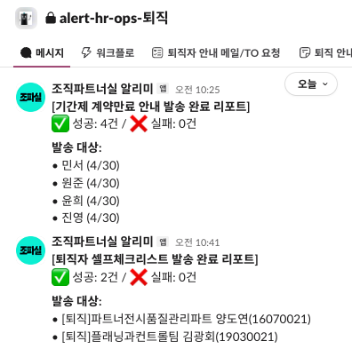
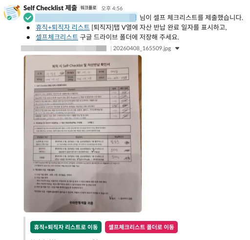

자동화 맛보기.
구성원에게는 슬랙·메일로, 담당자에게는 발송 리포트로.

조직파트너실 알리미 발송

담당자)발송 완료 리포트

구성원)셀프체크리스트 제출
TAKEAWAY
5개 플로우 · 2개 트리거를 공통 유틸 구조로 운영 중.
→ 이 구조를 기반으로...
파견직 계약 만료 안내를
AI와 로우코드로 완전 자동화합니다.
구성원에게는 슬랙·메일로, 담당자에게는 발송 리포트로.


5개 플로우 · 2개 트리거를 공통 유틸 구조로 운영 중.
→ 이 구조를 기반으로...